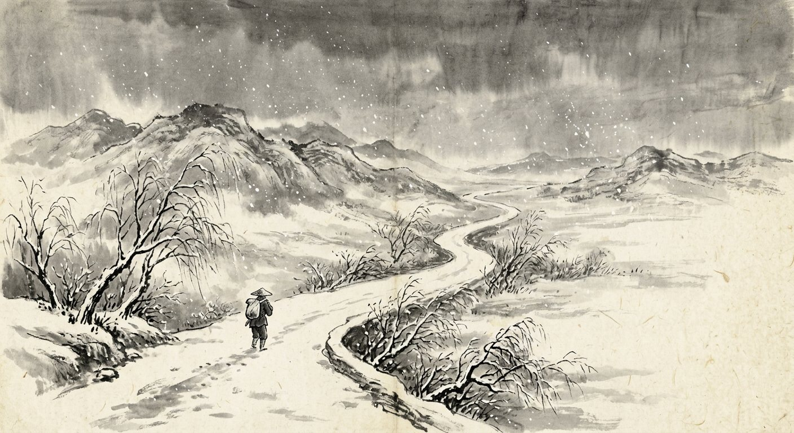
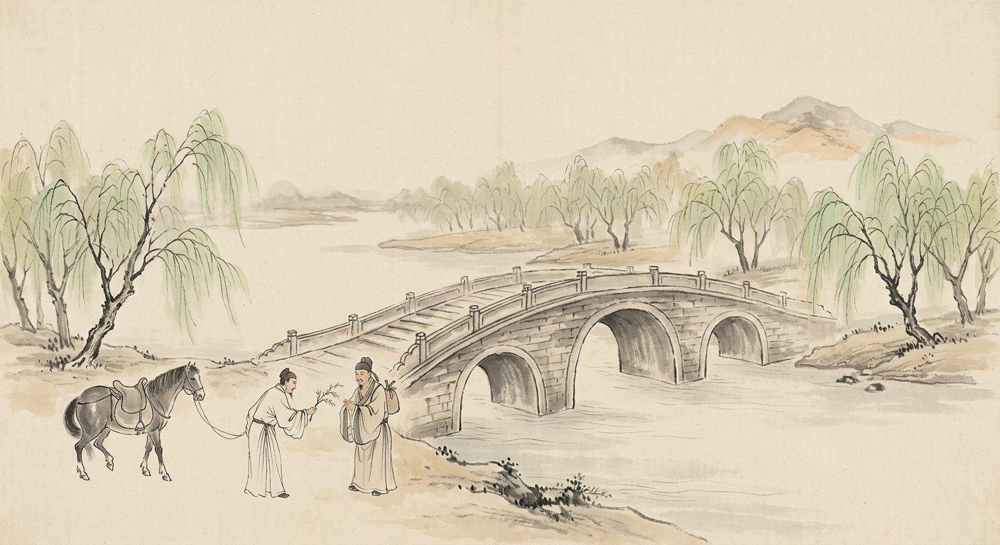
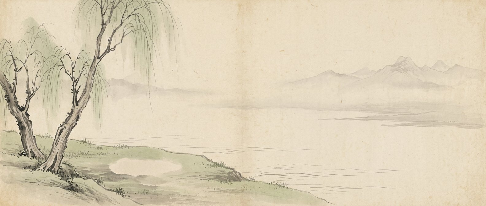
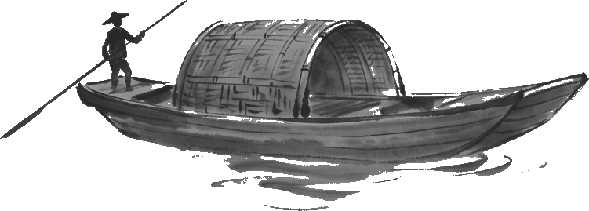

渭城朝雨浥轻尘，客舍青青柳色新。劝君更尽一杯酒，西出阳关无故人。
王维《送元二使安西》
全诗不着一个“别”字，满眼新柳、一杯再一杯，劝酒就是挽留。
Not one word for “goodbye”; one more cup of wine says it.

折柳送别里的中国式含蓄
Willows, farewells, and the art of saying less
壹
《诗经·小雅·采薇》

昔我往矣，
杨柳依依。
今我来思，
雨雪霏霏。
（后文：行道迟迟，载渴载饥。
我心伤悲，莫知我哀！）
出征那天，杨柳依依；归来这天，雨雪霏霏。诗人没有说“我舍不得”，也没有说“我很痛苦”，只写了两幅天气——走时的春柳，回时的风雪。三千年来，读者自己把离愁与沧桑填了进去。
这就是“以景寄情”：情感不说出口，交给景物替你说。东晋谢玄曾称这四句为《诗经》最佳之句（见《世说新语·文学》）。
“When I left, the willows swayed; now I return, snow falls thick.” The poet never says he is sad. He paints two kinds of weather and lets the reader feel the years in between.
贰
折柳赠别的传统
“柳”与“留”音近，折一枝柳相赠，就是说不出口的“请留下”。柳条随插随活，也寓意游子到了他乡也能落地生根。
《三辅黄图》记载：“霸桥在长安东，跨水作桥，汉人送客至此桥，折柳赠别。”灞桥也因此被称作“销魂桥”（《开元天宝遗事》）。
Liu (willow) sounds like liu (stay). Breaking a willow twig for a departing friend was a way of saying “please stay” without saying it. Han dynasty Chang’an saw friends off at Ba Bridge with willow twigs.

← 自右向左展卷Unroll from right to left
渭城朝雨浥轻尘，客舍青青柳色新。劝君更尽一杯酒，西出阳关无故人。
王维《送元二使安西》
全诗不着一个“别”字，满眼新柳、一杯再一杯，劝酒就是挽留。
Not one word for “goodbye”; one more cup of wine says it.
谁家玉笛暗飞声，散入春风满洛城。此夜曲中闻折柳，何人不起故园情。
李白《春夜洛城闻笛》
“折柳”是一支曲子的名字，听见它，人人想家。
“Breaking Willows” was a flute tune; hearing it, everyone thinks of home.
箫声咽，秦娥梦断秦楼月。秦楼月，年年柳色，灞陵伤别。
李白（传）《忆秦娥》
年年柳色新，年年有人在灞陵分手。
Every year the willows green again; every year someone parts at Baling.
天下伤心处，劳劳送客亭。春风知别苦，不遣柳条青。
李白《劳劳亭》
春风知道离别苦，故意不让柳条变青，好让人无柳可折。
The spring wind, knowing parting hurts, keeps the willows bare so no one has a twig to break.
城外春风吹酒旗，行人挥袂日西时。长安陌上无穷树，唯有垂杨管别离。
刘禹锡《杨柳枝词九首》其八
行人挥动衣袖，而满城树木中，只有垂杨“管”离别。
The traveller waves his sleeve; of all the trees in Chang’an, only the willow is in charge of goodbyes.
今宵酒醒何处？杨柳岸，晓风残月。
柳永《雨霖铃》
不说想你，只说醒来时会在哪里：一岸杨柳，一弯残月。
He doesn’t say “I’ll miss you”; he only asks where he’ll wake: a willow bank, a fading moon.
叁
柳条就是主人的手臂
告别时，我们先握握手，再慢慢松开，然后摆摆手。请你看看这个摆手的动作，再看看水边迎风飘荡的柳条——那些垂下的枝条，多像主人伸出的手臂：先是不舍地放手，又是一下一下、慢慢地摆手告别。
古人折柳相送，送的其实就是这只“手”。刘禹锡写“行人挥袂日西时”，衣袖与柳条在同一阵风里摆动。
At a farewell we shake hands, slowly let go, then wave. Watch that wave, then watch a willow by the water in the wind: its branches are the host’s arms, reluctant to let go, slowly waving. A willow twig given at parting is, in a sense, a hand.


肆
含蓄与直抒
把情感托付给一棵柳、一场雪、一杯酒。说得越少，留给对方的越多；读者要自己走完最后一步，才真正“懂”了。
关键词 留白 · 言外之意 · 意在言外 · 托物言志
把情感直接说出口：“I’ll miss you.”清楚、坦诚、不需要猜。
许多西方诗歌与日常告别习惯这种方式；中国诗里也有直抒胸臆的名篇（如“我心伤悲，莫知我哀”）。
两者不是高下之分，而是两种表达传统。含蓄的价值在于：它尊重对方的体会，也给不舍留了体面。下次告别，不妨在挥手时，想一想水边那棵柳。
Not better or worse, just two grammars of feeling. One says it; the other lets a willow say it.
昔我往矣
杨柳依依